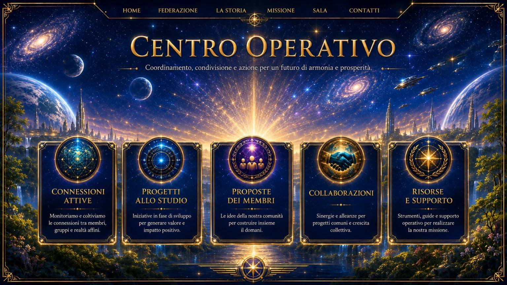

Relazioni tra membri e realtà affini.
Centro Operativo
Coordinamento, progetti, proposte, collaborazioni e risorse.


Iniziative in sviluppo.
Idee della comunità.
Sinergie per obiettivi condivisi.
 Federazione Galattica dei Mondi
Federazione Galattica dei MondiCoordinamento, progetti, proposte, collaborazioni e risorse.

Relazioni tra membri e realtà affini.
Iniziative in sviluppo.
Idee della comunità.
Sinergie per obiettivi condivisi.